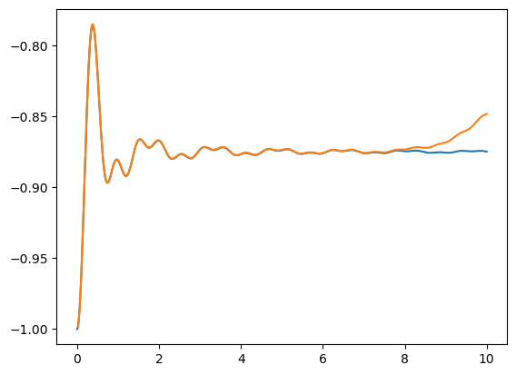

张量网络（torch）
[5]:
import quante as qt
import quante.torch_utils as qtc
import torch as tc
建立一个 mpo
[4]:
L = 12
ham = qt.generate.operas.heisenberg_operator(L)
ℋ = ham.to_mpo(L, pauli=False, backend='torch', device='cpu')
ℋ
[4]:
MPO; torch.float64; norm: 9.191e+01; maxbonddim: 5; device: cpu;
physdim: 2| 2| 2| 2| 2| 2| 2| 2| 2| 2| 2| 2|
----◻-----◻-----◻-----◻-----◻-----◻-----◻-----◻-----◻-----◻-----◻-----◻----
physdim: 2| 2| 2| 2| 2| 2| 2| 2| 2| 2| 2| 2|
bonddim: 1 4 5 5 5 5 5 5 5 5 5 5 1
site: 0 1 2 3 4 5 6 7 8 9 10 11
建立随机 mps
[6]:
𝜓 = qtc.MPS.random(L, linkdims=4, dtype=tc.float64, device='cpu')
𝜓.show()
MPS; torch.float64; norm: 4.788e+04; maxbonddim: 4; device: cpu;
physdim: 2| 2| 2| 2| 2| 2| 2| 2| 2| 2| 2| 2|
----◻-----◻-----◻-----◻-----◻-----◻-----◻-----◻-----◻-----◻-----◻-----◻----
bonddim: 1 4 4 4 4 4 4 4 4 4 4 4 1
site: 0 1 2 3 4 5 6 7 8 9 10 11
正则化
[7]:
𝜓.orthogonalize_(0)
𝜓.normalize_()
𝜓
[7]:
MPS; torch.float64; norm: 1.000e+00; maxbonddim: 4; device: cpu;
physdim: 2| 2| 2| 2| 2| 2| 2| 2| 2| 2| 2| 2|
----◻-----◁-----◁-----◁-----◁-----◁-----◁-----◁-----◁-----◁-----◁-----◁----
bonddim: 1 4 4 4 4 4 4 4 4 4 4 2 1
site: 0 1 2 3 4 5 6 7 8 9 10 11
完成收缩成矩阵/张量
[8]:
# convert to vector
vec = 𝜓.to_matrix()
mat = ℋ.to_matrix()
vec.shape, mat.shape
[8]:
(torch.Size([4096]), torch.Size([4096, 4096]))
tebd
[9]:
𝜓t = 𝜓.copy()
gates = ham.trotter_gates(L, tau=0.1, pauli=False)
for pos, gate in zip(*gates):
𝜓t.apply_gate_(pos, gate)
𝜓t.show()
MPS; torch.complex128; norm: 1.000e+00; maxbonddim: 32; device: cpu;
physdim: 2| 2| 2| 2| 2| 2| 2| 2| 2| 2| 2| 2|
----▷-----▷-----▷-----▷-----▷-----▷-----▷-----▷-----▷-----▷-----▷-----◻----
bonddim: 1 2 4 8 16 32 16 32 16 8 4 2 1
site: 0 1 2 3 4 5 6 7 8 9 10 11
dmrg
[10]:
# DMRG 求基态
𝜓0 = 𝜓.copy()
ℋ.dmrg(𝜓0, nsweep=5, chi_max=[100], cutoff=[1e-10])
After sweep 0: energy=-5.142090220377615 maxchi=16 maxtruncerr=0.00e+00 time=0.062
After sweep 1: energy=-5.142090632840522 maxchi=64 maxtruncerr=0.00e+00 time=0.050
After sweep 2: energy=-5.142090632840531 maxchi=64 maxtruncerr=0.00e+00 time=0.043
After sweep 3: energy=-5.142090632840529 maxchi=64 maxtruncerr=0.00e+00 time=0.045
After sweep 4: energy=-5.142090632840528 maxchi=64 maxtruncerr=0.00e+00 time=0.047
[10]:
(tensor(-5.1421, dtype=torch.float64),
MPS; torch.float64; norm: 1.000e+00; maxbonddim: 64; device: cpu;
physdim: 2| 2| 2| 2| 2| 2| 2| 2| 2| 2| 2| 2|
----◻-----◁-----◁-----◁-----◁-----◁-----◁-----◁-----◁-----◁-----◁-----◁----
bonddim: 1 2 4 8 16 32 64 32 16 8 4 2 1
site: 0 1 2 3 4 5 6 7 8 9 10 11 )
与 ed 对比
[11]:
tc.linalg.eigvalsh(mat)
[11]:
tensor([-5.1421, -4.8611, -4.8611, ..., 2.7500, 2.7500, 2.7500],
dtype=torch.float64)
tdvp
[12]:
# tdvp 求演化
𝜓0 = 𝜓.copy()
𝜓0.to(device='cpu')
ℋ.to(device='cpu')
ts_𝜓s = ℋ.tdvp(𝜓0, t=-1.0j, time_step=-0.1j, chi_max=[40], trunc_cut=[1e-10], outputlevel=0)
for t, 𝜓t in ts_ψs:
print(f"t = {t:.1f}: Sz = {𝜓t.measure('z', L//2).real}")
t = 0.1: Sz = -0.01832398672969515
t = 0.2: Sz = -0.015668911087819086
t = 0.3: Sz = -0.011335270803615282
t = 0.4: Sz = -0.005457272076564406
t = 0.5: Sz = 0.001783197470990934
t = 0.6: Sz = 0.010162424272362663
t = 0.7: Sz = 0.01942218356518027
t = 0.8: Sz = 0.029278327958101785
t = 0.9: Sz = 0.03943041034507669
t = 1.0: Sz = 0.049572041718182476
itebd
[14]:
# 无穷长链的演化
from quante.torch_utils.tensor_network.tnclass import MPS
import matplotlib.pyplot as plt
import torch as tc
import numpy as np
import scipy.integrate as spi
import quante as qt
# 解析解，过程见 notes/infinite_xy.md
jx = 1
jy = 0
hz = 2
λ = (jx + jy)/2
γ = (jx - jy)/2
theta = lambda k: np.arctan2(2*γ*np.sin(k), hz - 2*λ*np.cos(k))
omega = lambda k: 2 * np.sqrt((2*γ*np.sin(k))**2 + (hz - 2*λ*np.cos(k))**2)
ts = np.linspace(0, 10, 500)
sigma_zs = np.zeros_like(ts, dtype=np.float64)
for i, t in enumerate(ts):
sigma_zs[i] = 1/np.pi * spi.quad(lambda k: np.sin(theta(k))**2 * np.sin(omega(k) * t)**2, -np.pi, np.pi)[0] - 1
plt.plot(ts, sigma_zs)
# 生成无穷长 MPS
tmp1 = tc.zeros(1,2,1, dtype=tc.complex128, device='cpu')
tmp1[0,1,0] = 1.
tmp2 = tc.zeros(1,2,1, dtype=tc.complex128, device='cpu')
tmp2[0,1,0] = 1.
psi = MPS([tmp1, tmp2], [tc.tensor(1., dtype=tc.float64, device='cpu'), tc.tensor(1., dtype=tc.float64, device='cpu')], L=tc.inf)
# 生成两体门
op = qt.generate.operas
g = 2
ham = op.xx(0,1) + 0.5 * g * op.z(0) + 0.5 * g * op.z(1)
basis = qt.generate.basis.spin_basis(2)
mat = ham.to_matrix(basis, pauli=True)
t = 0.02 # 0.05 会有明显误差
expiH = tc.tensor(qt.linalg.expm(mat, -1j*t), dtype=tc.complex128, device='cpu').reshape(2,2,2,2)
# itebd 演化
ts = []
sz = []
bonds = []
cur_t = 0.
for i in range(500):
psi.apply_gate_(0, expiH, svd_alg='svd', trunc_para=(500,1e-8,None), unitary_gate=True)
psi.apply_gate_(1, expiH, svd_alg='svd', trunc_para=(500,1e-8,None), unitary_gate=True)
cur_t += t
sz.append(psi.measure('Z', 0).real)
ts.append(cur_t)
bonds.append(psi.maxbonddim())
plt.plot(ts, sz)
# 运行时间 2m 22.2s
[14]:
[<matplotlib.lines.Line2D at 0x21bf45c4a90>]
